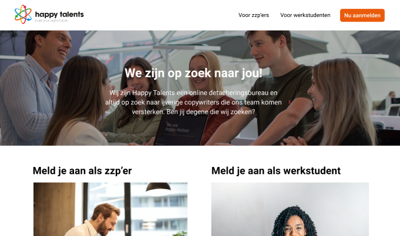

Het werven van werkstudenten en
startende
ZZP’ers voor Happy Talents via online kanalen.
Happy Talents
Tijdens de projectweken heb ik met mijn medestudenten Merel, Jolien en
Lise voor Laura van der Zanden en Annelies Kromwijk van Happy Talents gewerkt. Met Happy Talents hebben we
om de week op vrijdag een online meeting gehad waarin we de voortgang besproken en opleveringen hebben laten
zien.
Opdracht
Het werven van werkstudenten en zzp’ers via online kanalen. Door middel
van een uitgewerkte campagne met daarin onder andere een social media
strategie en een gecreërde landingspagina.
Proces
Binnen het project heb ik mij vooral bezig gehouden met de
landingspagina. De eerste weken bestonden uit het uitwerken van wireframes en een visueel ontwerp voor de
landingspagina. Op deze ontwerpen heb ik samen met mijn groepsleden verschillende gebruikersonderzoeken
uitgevoerd waardoor het resultaat steeds beter werd. Met de opdrachtgevers hebben we ook een feedback ronde
gehad waardoor er ook weer een verbeterslag heeft plaats gevonden. De teksten op de landingspagina heb ik
aan de hand van de zoekwoordanalyse geschreven waarin de SEO zoekwoorden zijn toegepast.
In de tweede
fase van het project
heb ik mij voornamelijk bezig gehouden met het implementeren van Google Analytics op de landingspagina die
mijn groepsgenoot Lise heeft gemaakt. Naast alleen Google Analytics heb ik ook Google Tag Manager ingesteld
waardoor events kunnen worden bijgehouden. Dit ging onder andere over het aanmelden voor de nieuwsbrief en
de aanmeldknoppen voor zzp'ers en werkstudenten.

Eindresultaat
Aan het eind van het project zijn de opleveringen gepresenteerd aan Laura en Annelies van Happy Talents in
de
vorm van een eindpresentatie. Bekijk in de presentatie hieronder een overzicht van de opgeleverde
eindresultaten.
Feedback opdrachtgevers
In eerste instantie vonden we het als groep best lastig om met de opdrachtgevers te communiceren. Ze
reageerden bij een meeting dan leken ze wat minder enthousiast of wat afwezig. Na een verloop van tijd toen
we ook meer visuele opleveringen toonden zoals de wireframes of het ontwerp van de landingspagina raakten ze
steeds meer enthousiast. Ze gaven ook een aantal keren aan dat ze blij waren met de opleveringen en dat het
eigenlijk precies is waar ze op hoopten.
Reflectie
Voorafgaand aan het project had ik geen leidersrol in de opdracht zoals ik die bij Urgenda had. Ik denk wel
dat ik op bepaalde gebieden wel meer de natuurlijke leidersrol is ontstaan in bijvoorbeeld het maken van een
ontwerp voor de landingspagina. Ik had daar toch met meeste ervaring in en dan wordt de leidersrol toch een
beetje afgedwongen.
In mijn vorige groepje in de webshopopdracht zei ik nog weleens als iemand met een onderdeel er niet uit
kwam “dat doe ik wel even”. Ik heb geprobeerd dit bij het Happy Talents groepje niet meer te doen. Zo heeft
bijvoorbeeld Lise de landingspagina van Happy Talents opgezet met HTML en CSS en heb ik mij daar amper mee
bemoeid. Daar leert zij niet alleen van als ze het zelf kan oplossen maar het was dus ook een goede
leerschool voor mij om het gewoon maar te laten gebeuren. Natuurlijk heb ik als ze een vraag had wel gewoon
meegekeken maar ik heb niet zelf elementen zitten op te lossen voor iemand anders zijn
taak/leerdoel.
In tegenstelling tot het Urgenda project heb ik voor Happy Talents ook een aantal taken uitgewerkt die niet
binnen mijn leerdoel vielen zoals het maken van een ontwerp voor de landingspagina. Als groep hebben we deze
taak opgedeeld aangezien het bij niemand onder zijn leerdoel viel en zo iedereen even tijd kon blijven
besteden aan zijn leerdoel. Verder net als bij Urgenda blij dat de opdrachtgevers zo enthousiast zijn over
het eindresultaat. Fijn dat als je iets maakt dat daar ook de waarde van wordt ingezien en dat het gebruikt
gaat worden.